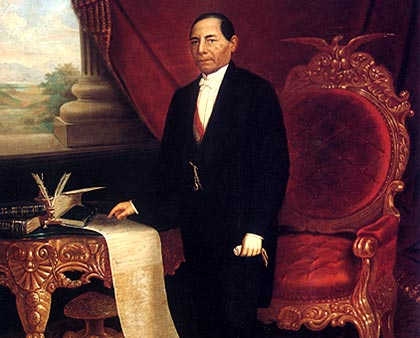

Batalla de puebla
Batalla
Imagen de la Batalla

Imagen de la Batalla
En mayo de 1861, el presidente Benito Juárez anunció la suspensión de los pagos de deuda la mexicana. Como consecuencia, los acreedores que eran Francia, Inglaterra y España firmaron la conocida Convención de Londres por la cual se comprometían enviar contingentes militares hacia el territorio mexicano con el fin hacer valer los derechos como acreedores.
En diciembre del mismo año, llegaron al puerto de Veracruz los primeros militares mientras que en enero de 1862 arribaron las tropas inglesas y francesas. Una vez en el país, los representantes de los tres países acreedores enviaron un ultimátum al gobierno de México exigiéndole el pago de las deudas ya que de lo contrario invadirían el país. Juárez, al ver que la invasión era un riesgo evidente, solicitó negociar para llegar a un acuerdo amistoso al tiempo que derogó el decreto que llevó a los países acreedores a iniciar acciones militares.
El presidente Juárez viendo la posibilidad de una invasión militar a la Ciudad de México ordenó la fortificación de Puebla al mismo tiempo que creó una nueva unidad militar conocida como Ejército de Oriente. Esta en un principio estuvo bajo las órdenes de José López Uraga pero debido a su mal desempeño el mando recayó en las manos del hasta entonces Ministro de Guerra, Zaragoza. Él tuvo la tarea de organizar las fuerzas, que sumaban unos 10.000 hombres, para repeler el ataque del ejército francés.
Los representantes de los países acreedores aceptaron la propuesta de negociación y en febrero de 1862 se reunieron con los ministros Manuel Doblado (Mtro. De Exterior) e Ignacio Zaragoza (Mtro. de Guerra). La reunión se llevó a cabo en la hacienda La Soledad muy próxima a Veracruz. Esta negociación derivó en la firma de los Tratados preliminares de La Soledad mediante los cuales España, Francia e Inglaterra se comprometían a reconocer la independencia del país. En cuanto a la deuda, se aceptó que las negociaciones se realizasen en Orizaba, Córdoba y Tehuacán. En caso de no llegar a un acuerdo, se comenzarían las campañas militares desde las costas.
La Batalla de Atlixco tuvo lugar el 4 de mayo de 1862 en las inmediaciones de la Hacienda de las Traperas en Atlixco en el estado de Puebla, México, entre elementos del ejército mexicano de la república, al mando de los generales Antonio Carvajal y Tomás O'Horan contra las tropas al servicio del Segundo Imperio Mexicano comandadas por el general José María Cobos y de Leonardo Márquez, compuesta de soldados conservadores mexicanos en apoyo de envío de refuerzos para llevar a cabo la Batalla de Puebla, durante la Segunda Intervención Francesa en México.
Esta batalla culminó con una victoria republicana y debido a esto el grupo conservador de Márquez no pudo lograr su objetivo de auxiliar a las tropas francesas del Conde de Lorencez en la batalla de Puebla.
La batalla de Puebla fue un combate librado el 5 de mayo de 1862 en las cercanías de la ciudad de Puebla, entre los ejércitos de la República Mexicana, bajo el mando de Ignacio Zaragoza, y del Segundo Imperio Francés, dirigido por Charles Ferdinand Latrille, conde de Lorencez, durante la Segunda Intervención Francesa en México, cuyo resultado fue una victoria importante para los mexicanos ya que con unas fuerzas consideradas como inferiores lograron vencer a uno de los ejércitos más experimentados y respetados de su época. Pese a su éxito, la batalla no impidió la invasión del país, aunque sí que sería la primera batalla de una guerra que finalmente México ganaría. Los franceses regresarían al siguiente año, con lo que se libró una segunda batalla en Puebla en la que se enfrentaron 35 000 franceses contra 29 000 mexicanos (defensa que duró 62 días) y lograrían avanzar hasta la Ciudad de México, lo que permitió establecer el Segundo Imperio Mexicano. Finalmente, ante la incapacidad de consolidar un imperio y después de perder 11 000 hombres debido a la actividad guerrillera que nunca dejó de subsistir, los franceses se retiraron incondicionalmente del país en el año 1867.

Benito Pablo Juárez García (San Pablo Guelatao, Oaxaca, 21 de marzo de 1806 – Ciudad de México, 18 de julio de 1872) fue un abogado y político mexicano, de origen indígena (de la etnia zapoteca), presidente de México en varias ocasiones, del 18 de diciembre de 1857 al 18 de julio de 1872.1 Se le conoce como el «Benemérito de las Américas».
Ignacio Zaragoza Seguin (24 de marzo de 1829 - 8 de septiembre de 1862) fue un militar mexicano reconocido como el héroe de la Batalla de Puebla, que tuvo lugar el 5 de mayo de 1862, cuando el ejército mexicano derrotó al ejército francés de élite al mando de Charles Ferdinand Latrille (Conde de Lorencez), considerado en su momento el mejor del mundo.

Felipe Benicio Berriozábal Basabe (Zacatecas, Zacatecas, 23 de agosto de 1829 - Ciudad de México, 9 de enero de 1900) fue un político, militar liberal e ingeniero mexicano. Participó en la Guerra de Reforma. Formó parte de los gobiernos de Benito Juárez y Porfirio Díaz
 .
.
José de la Cruz Porfirio Díaz Mori (Oaxaca de Juárez, Oaxaca, 15 de septiembre de 1830 - París, Francia, 2 de julio de 1915) fue un militar mexicano, que ejerció el cargo de presidente de México en siete ocasiones; la primera, del 24 de noviembre de 1876 al 6 de diciembre de 1876 (después del triunfo de la Revolución de Tuxtepec, desempeñando el cargo de forma interina); y la segunda vez, del 17 de febrero de 1877 al 5 de mayo de 1877.

General Ignacio Luis Antonio Mejía Fernández de Arteaga (*Zimatlán de Álvarez, Oaxaca, 1 de septiembre de 1814 - Ayutla, Oaxaca, 2 de diciembre de 1906) fue un militar y político mexicano que participó en la Primera intervención estadounidense en México, en la Guerra de Reforma, en la Segunda Intervención Francesa en México y otras guerras civiles que se desarrollaron en México durante el siglo XIX.

Miguel Negrete Novoa (Tepeaca, Puebla, 8 de mayo de 1824 — Ciudad de México, 5 de enero de 1897) fue un militar mexicano, participó durante las guerras civiles del siglo XIX, así como durante las intervenciones de Estados Unidos y Francia. Fue ministro de Guerra durante la presidencia de Benito Juárez.


 1
1 3
3 4
4 6
6 8
8 9
9